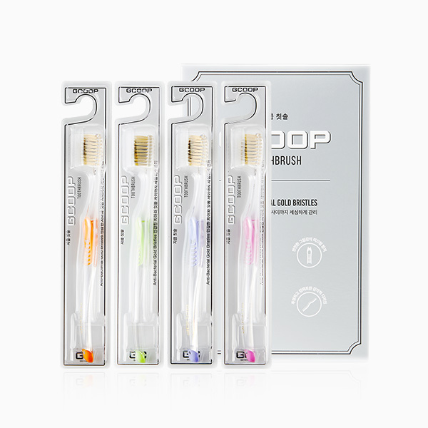

지쿱 칫솔
항균 이중 미세모로 잇몸과 플라그 케어
- 회원가입 없이 회원가
- 지쿱 본사 정품 직접 발송
- 5만 원 이상 무료배송
지쿱 칫솔 상세 설명 · 원료와 특징
지쿱 칫솔 민감한 치아와 잇몸 사이사이까지 부드럽고 깨끗한 항균 이중 미세모로 잇몸부터 치아 사이, 세밀한 곳까지 관리하여 프라그 케어 및 잇몸질환(치주염)에 도움을 줄 수 있습니다.
제품 특징 최첨단 공법으로 만든 칫솔모를 사용하여 세균 서식이 쉬운 부분까지 관리하여 위생적으로 칫솔을 사용하실 수 있습니다.
항균 99.9% 테스트 완료 칫솔모 - 특수 가공된 금 & 숯분 첨가 - 세균 서식이 쉬운 부분까지 효과적으로 관리 안전한 그립감의 미끄럼 방지 - 미끄럼을 염려한 고무 손잡이 - 탁월한 양치압이 가능, 잇몸과 치아 손상 배려 잇몸 틈새 미세모의 입체 세정 - 과학적 설계의 이중 미세모 - 잇몸 사이사이의 세밀한 곳까지 프라그 케어 투명하고 컴팩트한 감각적 디자인 - 인체공학적 크리스탈 웨이브 핸들
- 컴팩트한 디자인 감각으로 산뜻한 기분 선사 칫솔 사용 방법 적당량의 지쿱 치약을 지쿱 칫솔에 바릅니다.
부드럽게 회전하면서 입안에 있는 음식 찌꺼기를 제거 합니다.
아래위로 바깥부터 부드럽게 칫솔을 사용합니다.
아래위로 안쪽을 부드럽게 칫솔을 사용합니다.
치아 위를 부드럽게 사용합니다.
칫솔로 혀에 있는 백태를 제거합니다.
물로 헹구어 냅니다.
지쿱 치약과 지쿱 칫솔로 안전하고 깨끗하게~ 꼭!
이여야 합니다.
지쿱 칫솔은 부드럽고 깨끗한 항균 이중 미세모로 잇몸부터 치아 사이사이까지 관리해 드립니다.
항균 99.9% 테스트 완료 칫솔모를 사용하여 우리 가족의 건강을 안전하게 세균없이 깨끗하게 사용하실 수 있도록 연구하여 담아냈습니다.
올바른 칫솔 관리법 굵고 뻣뻣한 모를 사용하지 마세요.
칫솔모가 뻣뻣한 칫솔을 사용하게 되면 잇몸이 상하고 치아가 마모됩니다. 따라서 부드러운 미세모를 사용하는 것이 구강건강에 좋습니다.
너무 오래 사용하지 마세요.
칫솔은 가급적 3개월에 한번 교체해 주는 것이 좋습니다.
한 칫솔을 너무 오랫동안 사용하게 되면 칫솔모가 마모되어 치태가 제대로 제거되지 않습니다.
사용 후 물로 잘 씻어주세요.
양치질 후에는 칫솔모 사이에 음식물 찌꺼기와 치약 잔여물이 남을 수 있으니 방치하면 세균 증식의 원인이 됩니다.
각각 개별적으로 보관해 주세요.
칫솔모가 위를 향하게 세우고, 개별적으로 보관하면 세균 증식을 예방할 수 있습니다.
잘 말려주세요.
습한 환경은 세균 증식이 아주 잘됩니다.
칫솔모가 잘 마를 수 있도록 해주세요.
브랜드 스토리 일상생활에 효율적이고 편리한 제품을 공급하며 착한 소비를 지향하는 생활 전문 브랜드입니다.
매일 사용하는 일상 제품은 언제 어디서든 믿고 안심할 수 있어야 합니다. 라이프스타일에 맞는 편리한 제품을 만나보세요.
각종 인증 사항 비코프인증 획득!
비코프인증(B-Corp Certified) 이란?
B-Corp은 비즈니스를 통해 사회 환경적 문제를 해결하고 사회에 긍정적인 영향을 끼치는 기업을 확대하기 위해서 2007년 BLab (미국비영리 조직)이 만든 글로벌 사회적 기업 인증 제도입니다.
가족친화우수기업 인증 획득!
가족친화인증 가족친화제도를 모범적으로 운영하는 기업 및 공공기관에 대하여 심사를 통해 인증을 부여하는 제도입니다. 가족친화인증 기업은 근로자가 일에 집중하도록 하여 기업 생산성과 경쟁력 강화하고 출산율 제고, 고용 안정 등으로 국가경제 발전에 기여할 뿐 아니라 가족친화경영 확산을 통한 근로자와 가족 구성원의 삶의 질을 향상시키는 바른 기업 문화를 확산 시킵니다.
지쿱 본사 제품 상세페이지 내용을 옮겨 정리했어요.
상품정보제공고시
| 품명 및 모델명 | 지쿱 칫솔 |
|---|---|
| 용량 또는 중량 | 1세트 (4개) |
| 법에 의한 인증ㆍ허가 등을 받았음을 확인할 수 있는 경우 그에 대한 사항 | 해당사항없음 |
| 사용방법 | 1. 적당량의 지쿱 치약을 지쿱 칫솔에 바릅니다. 2. 부드럽게 회전하면서 입안에 있는 음식 찌거기를 제거 합니다. 3. 아래위로 바깥부터 부드럽게 칫솔을 사용합니다. 4. 아래위로 안쪽을 부드럽게 칫솔을 사용합니다. 5. 치아 위를 부드럽게 사용합니다. 6. 칫솔로 혀에 있는 백태를 제거합니다. 7. 물로 충분이 헹구어 냅니다. |
| 사용상 주의사항 | 1. 오일과 같이 사용하지 마십시오. 칫솔모가 녹을 수 있습니다. 2. 용도이외에는 사용하지 마십시오 |
| 제조일자 및 사용기한 | 제조일자 및 사용기한 |
| 판매원 | 제너럴바이오㈜ |
| 제조국 또는 원산지 | 대한민국 |
| 제조자, 수입품의 경우 수입자를 함께 표기 | ㈜핸인핸 |
| 품질 보증 기준(A/S 관련사항) | 본 상품의 품질보증 및 피해보상에 관한 사항은 관련 법률 및 공정거래위원회 고시 [소비자분쟁해결기준]에 따릅니다. |
| 소비자 상담 문의 | 카카오톡으로 문의 주시면 지쿱 본사로 접수해 드립니다. |
생활제품 다른 제품
배송·교환·반품
지쿱 본사에서 직접 발송해요. 50,000원 이상 주문 시 무료배송, 50,000원 미만은 배송비 2,500원이에요. A/S·교환·반품은 카카오톡으로 문의 주시면 지쿱 본사로 접수해 드려요.